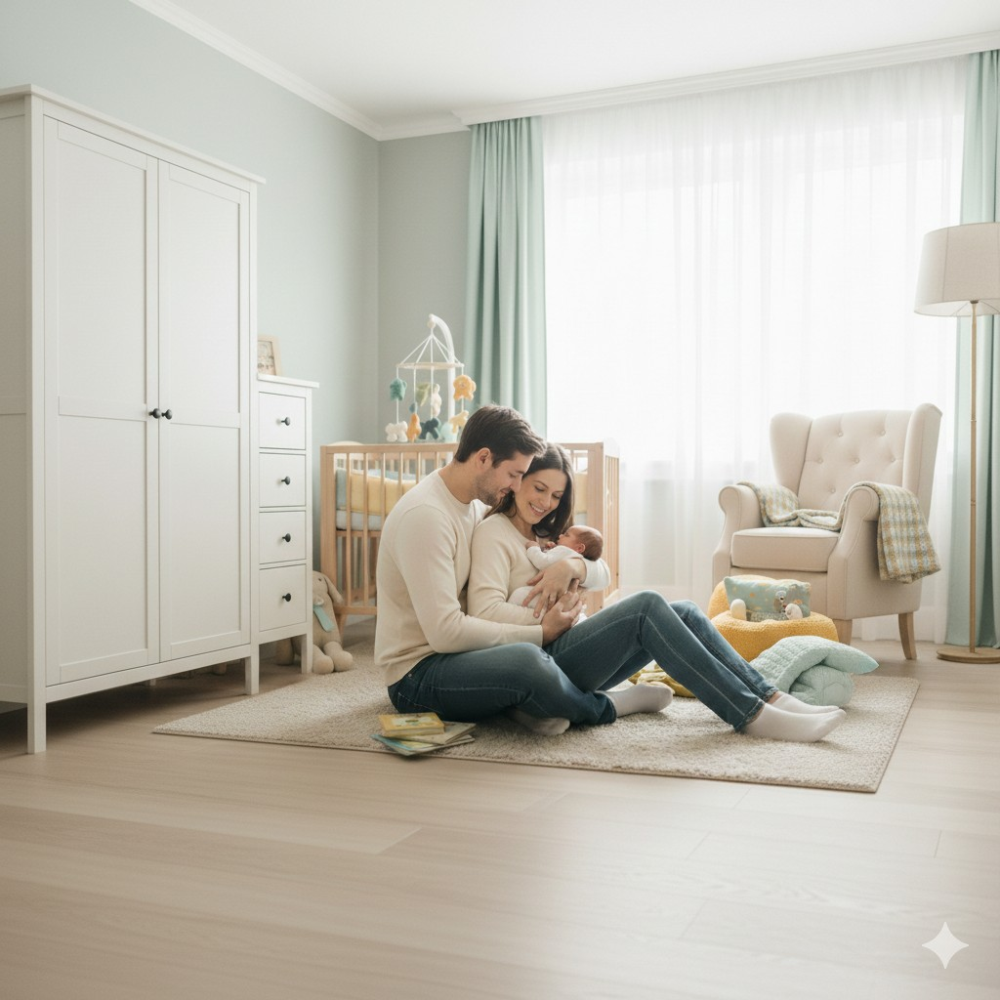

About Raising Little Souls
I used to think parenting would feel natural. Like love would automatically come with confidence.
But the truth is… love came first. Confidence came much later.
There were days I felt like I was guessing everything. Nights I cried quietly because I couldn't figure out why my baby wouldn't settle. Moments when I stared at milestone charts and wondered if my child was "behind," even though deep down I knew every child grows at their own pace.
I kept telling myself to be grateful. And I was. But I was also exhausted—mentally and physically. I was learning a brand-new life while trying to keep a tiny human alive, comforted, fed, clean, and safe… while still pretending I was "fine."
Raising Little Souls is the space I wish I had back then.
It's written from my own real experience—the messy, honest kind. The kind where you love your child with your whole heart, but sometimes you also feel lost, touched-out, and tired in a way you can't explain.
Here, we talk about:
- sleep struggles (waking, regressions, routines, naps)
- feeding worries (milk, solids, picky phases)
- the emotional side of parenting (because that part matters too)
- and gentle recommendations that can make everyday life easier
This isn't a perfect-parent website.
It's a real-parent
website.
If you've ever felt alone in the struggle—welcome. You're exactly who I built this for.
If you have a topic you'd like us to cover or just want to say hello, head over to the Contact page.